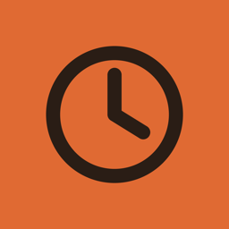
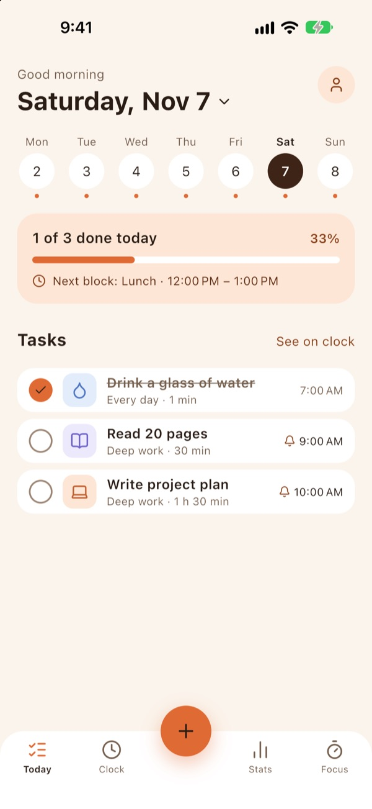
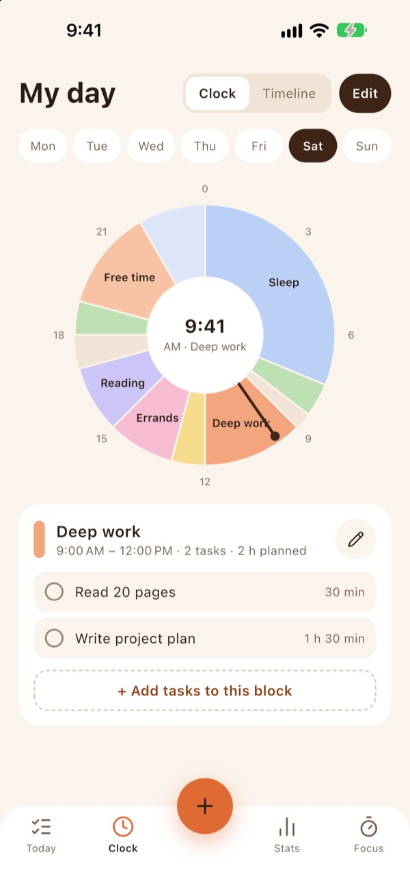
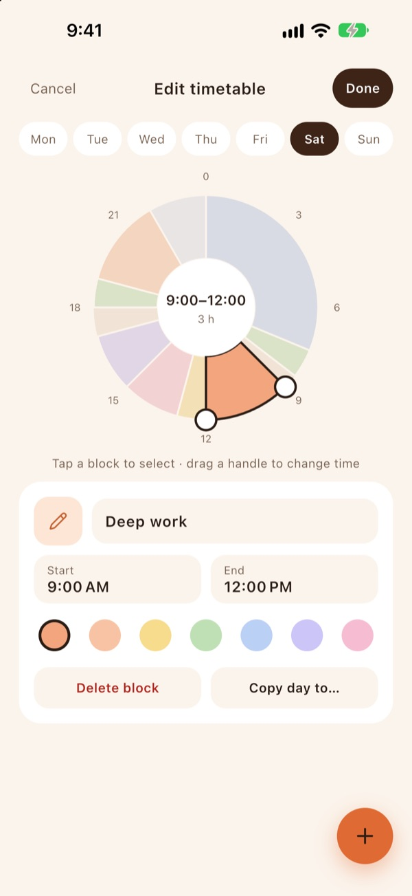
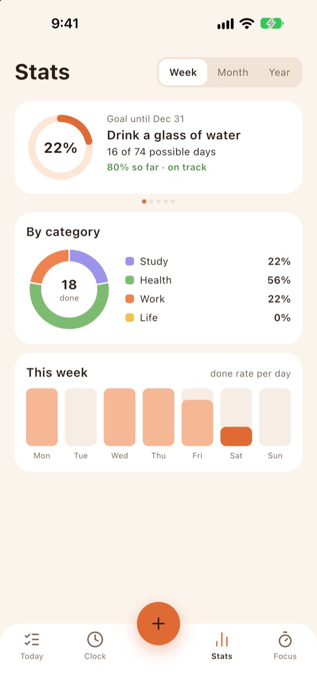
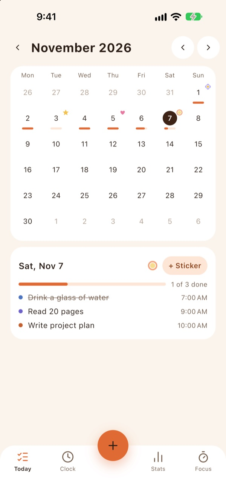
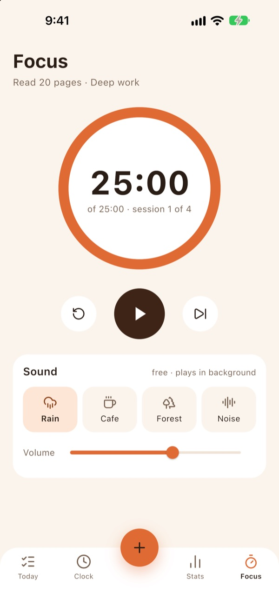

이음(Ieum)은 할 일 목록과 24시간 원형 시계 시간표를 한 화면에 합친 iPhone용 무료 플래너 앱입니다. 하루가 시계 한 바퀴로 그려지고, 할 일은 그 시간 블록 (타임블록) 안에 들어갑니다. 반복 할 일, 여러 개의 알림, 기한이 있는 통계, 뽀모도로 집중 타이머와 배경 소리, 테마, 홈 화면 위젯까지 구독이나 인앱 결제 없이 모두 무료이며, 광고로 운영합니다. 계정이 없고 데이터는 기기 안에만 저장됩니다.
| 가격 | 무료 (구독·인앱 결제·광고 제거 결제 없음, Google AdMob 광고로 운영) |
|---|---|
| 기기 | iPhone (iOS 15 이상) · Android는 준비 중 |
| 언어 | 한국어, 영어 (iPhone 언어를 따름) |
| 계정 | 필요 없음 · 데이터는 기기 안에만 저장 |
| 연령 등급 | 9+ |
| 만든 곳 | NJHouse (대한민국 서울) |






많은 플래너 앱이 구독으로 여는 기능을 이음은 처음부터 모두 엽니다. 광고를 봐야 열리는 기능도 없습니다.
| 기능 | 이음 |
|---|---|
| 반복 할 일 | 무료 |
| 여러 개의 알림 | 무료 |
| 하루 시간표·타임블록 | 무료 |
| 할 일 개수 제한 없음 | 무료 |
| 통계 | 무료 |
| 기기 캘린더 함께 보기 | 무료 |
| 놓친 할 일 다시 배치 제안 | 무료 |
| 집중 타이머·배경 소리 | 무료 |
| 테마·앱 아이콘 | 무료 |
할 일 목록과 24시간 원형 시계 시간표를 합친 iPhone 플래너입니다. 하루를 시간 블록으로 나누고, 그 블록 안에 할 일을 넣어 계획합니다. 시계에서 체크하면 목록에서도 체크됩니다.
모든 기능이 무료입니다. 구독, 인앱 결제, '광고 제거' 결제가 없고, 광고를 봐야 열리는 기능도 없습니다. 앱은 Google AdMob 광고로 운영합니다.
일부 화면 아래의 배너와 가끔 나오는 전체 화면 광고(앱을 열 때, 통계 화면에 들어갈 때, 집중 세션이 끝난 뒤)가 있습니다. 할 일을 추가하거나 시간표를 편집하는 동안, 집중하는 동안, 할 일을 체크한 직후에는 광고가 나오지 않습니다.
네. 요일마다 하루를 블록(예: 수면, 집중 업무, 운동)으로 나누고 블록마다 할 일을 넣습니다. 블록은 손잡이를 끌어 5분 단위로 바꾸고, 다른 요일로 복사할 수 있습니다.
iPhone 안에만 저장됩니다. 계정도 서버도 없어서 개발자도 데이터를 볼 수 없습니다. 기기 캘린더 일정은 선택해서 켤 때만 읽고, 바꾸거나 밖으로 보내지 않습니다.
프로필 및 설정(화면 스타일) › 백업에서 '백업 파일 만들기'로 파일 하나를 만들어 파일 앱, iCloud Drive, 메시지 등에 보관하고, 새 iPhone에서 '백업에서 복원'으로 불러오면 됩니다.
지금은 iPhone 앱만 있습니다. Android 버전은 준비 중입니다.
한국어와 영어를 지원하며, iPhone 언어 설정을 따릅니다.
계정이 없고 할 일·시간표·통계는 기기 안에만 저장됩니다. 광고를 위해 Google AdMob이 기기 광고 식별자 등을 처리할 수 있으며, 추적 허용 여부와 관계없이 모든 기능이 똑같이 동작합니다. 개인정보 처리방침 전문
앱 문의: njhstudio26@gmail.com